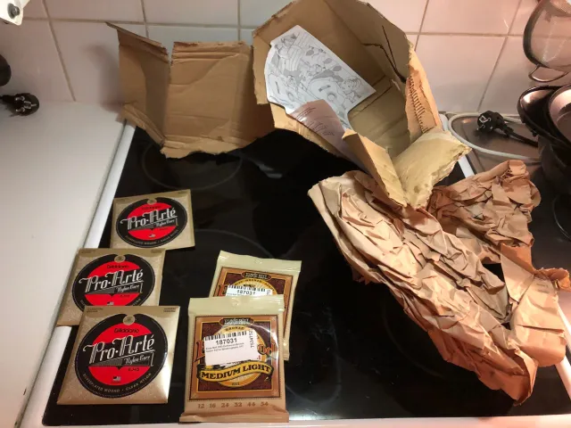
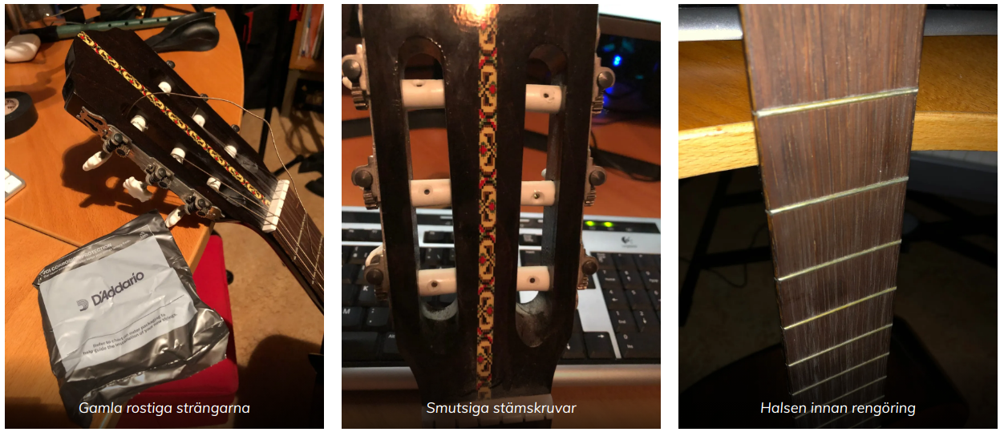
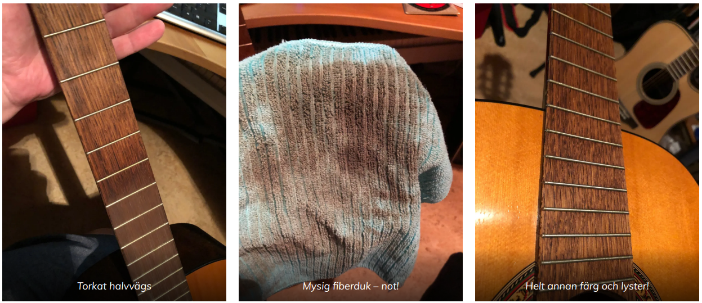
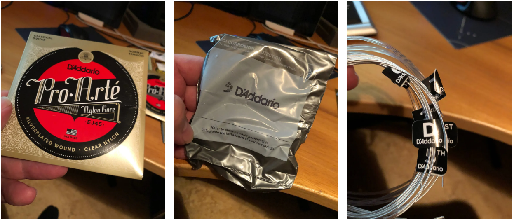
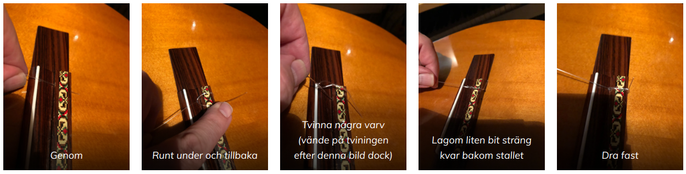
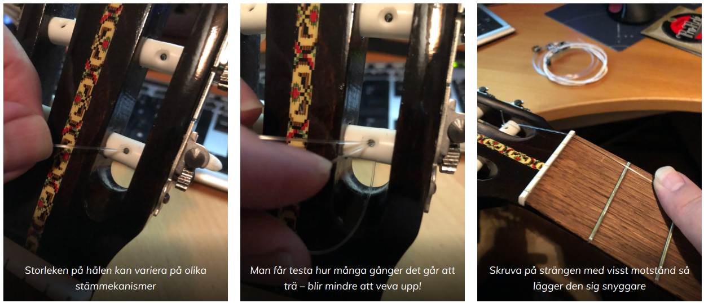
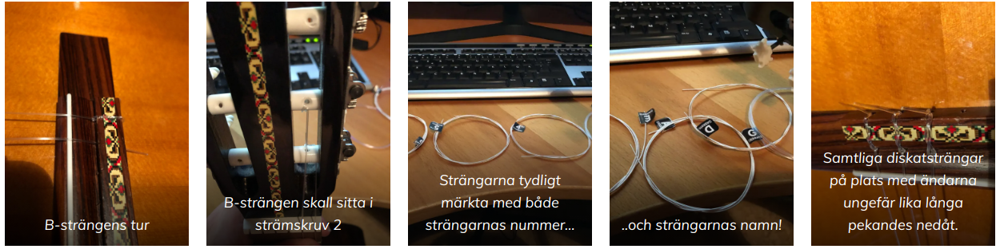
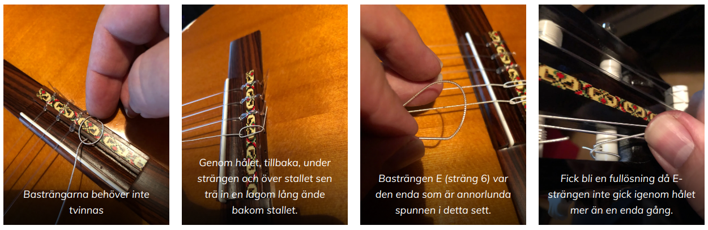
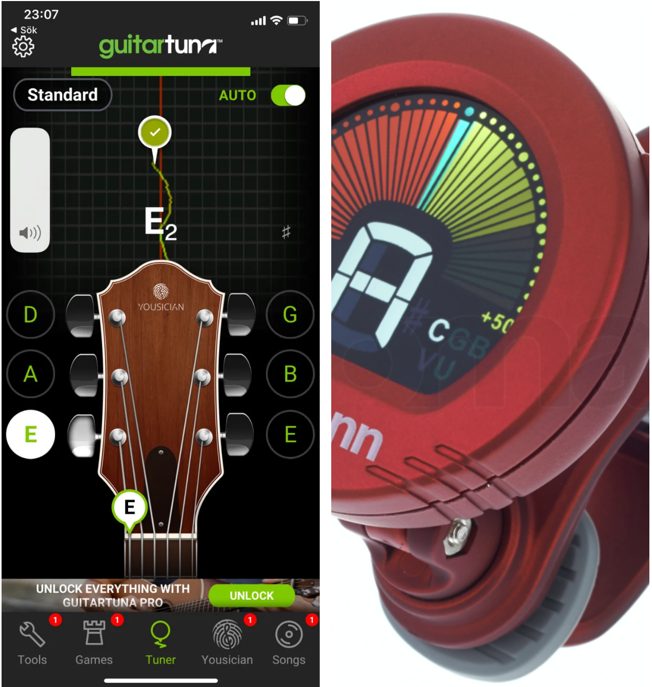

August 16, 2020
Fick en gammal gitarr som stått för sig själv i nått hörn i många många herrans år. Hann bara försöka stämma den så small en av dom riktigt risiga strängarna av. Bara å beställa hem nya strängar då mitt lager sinat totalt.

Blev thomann som fick st√• f√∂r leveransen d√• vi inte har n√•tt bra alternativ l√§ngre lokalt i G√§vle. Transporten gick som vanligt snabbt till Sverige och blev sen r√§tt osynlig innan jag pl√∂tsligt kunde best√§lla att f√• paketet l√§mnat p√• vanliga utl√§mningsst√§llet ist√§llet f√∂r att dom ska ‚Äùf√∂rs√∂ka leverera till d√∂rren‚Äù (brukar ju aldrig funka). D√∂m om min f√∂rv√•ning dock n√§r jag h√§mtade ut paketet!. Magiskt misshandlat kom det √•tminstone efter n√•gra dagar med mina nya str√§ngar ‚Äì tur s√•nna inte √§r √∂mt√•liga! Drog lite i en flik p√• vad som var kvar av kartongen och vips s√•g resterna av paketet ut s√• h√§r! üôÇ
Tror en bekants teori stämmer bra! Nån har helt enkelt suttit på paketet…
Ta bort gamla strängar och göra rent
Först började jag med att försöka pilla loss strängarna men dom satt så förbenat (delvis rostiga också) att jag fick klippa av dom till slut. Med alla strängar borta så blir det klart enklare att rengöra själva halsen på gitarren.

Torkar först allt på gitarren förutom själva halsen med en relativt grov fiberduk lätt fuktad. När endast halsen återstår tog jag lite mer vatten på fiberduken och gnuggade en hel del och vips så ser halsen betydligt trevligare ut och får faktiskt en helt annan färg!

Stränga på nya strängar på gitarren
Som nya strängar hade jag till denna gitarr jag aldrig spelat på valt några medium spändasträngar (brukar också kallas normal tension) närmare bestämt D’Addario Pro-Arté EJ 45 SilverPlated Wound och Clear Nylon. Jag gillar dessa – inte allra billigaste man kan hitta men långt från dyraste. För dom som inte är så van är dom också mycket bra märkta med både strängarnas namn och nummer. Föredömligt!

Efter att ha studerat stallet en del och även kollat hur dom gamla utnötta strängarna satt så valde jag att sätta dessa nya på samma sätt. Genom hålet, tillbaka och runt några varv innan man stoppar ner änden bakom stallet med en lagom liten utstickande bit sträng. Börjar med E-strängen såklart (sträng 1).

I stämskruvens ände är hålets storlek avgörande. Hur många gånger kan man trä respektive sträng igenom för att få effektiv låsning? Med den tunnaste E-strängen lyckades jag få den genom hålet tre gånger på denna gitarr! Sen var det bara att skruva på strängen med lite spänning på strängen genom att hålla ett finger och bromsa strängen som på bilden nedan. Då får man snygg upprullning tycker jag och jag gillar inte strängar som sticker ut en massa från stämskruvarna heller. Lite måste dom sticka ut för om inte annat kan det vara klurigt att få bort dom nästa gång man vill byta.

Sen är det bara att upprepa med B-strängen (sträng 2) och så vidare. B-strängen ska sitta i nästa stämskruv på nedre sidan. Snaaaabla skruvande blir det! Ångrade att jag glömde även denna gång beställa en sån där händig liten vev för att stränga på nya strängar. För att det ska vara enklare att montera efterföljande strängar är det bra om man viker änden i stallet åt samma håll på alla strängar – dvs nedåt. Jag valde också att tvinna alla strängarna som syns på sista bilden.

När man sen kommer till bassträngarna (dvs D, A och E – eller 4,5 och 6) så valde jag inte att tvinna dessa i stallet då dom brukar sitta väldigt bra ändå när det är täckta strängar. Trär bara genom, tillbaka, under och över. Ibland är en eller flera av dom grövre bassträngarna spunnen annorlunda i änden. Detta är för det ska vara lättare att få dom att fästa i stallet. Så den änden ska vara där. När jag kom till E-strängen (sträng 6) så gick den endast en gång genom hålet och jag var lite trött så jag gjorde en liten låsdragning bara som på sista bilden.

Nu √•terst√•r bara en par dagars st√§mmande och spelande s√• str√§ngarna s√§tter sig lite. Jag gillar st√§mapparater s√• det g√•r fort. Finns automatiska appar till telefonen (t.ex GuitarTuna f√∂r iPhone) eller varf√∂r inte en billig vibrationsst√§mare fr√•n thomann! Skruva spela, skruva spela! L√•ter ju tyv√§rr r√§tt illa snabbt n√§r str√§ngarna √§r nya‚Ķ üôÇ

Nu efter några dagar när jag meckar ihop detta och har skruvat, plinkat, skruvat och plinkat så är jag mycket nöjd med resultatet. Gitarren har ett förvånandsvärttrevligt ljud dessutom! Visade sig lättspelad och har både varm och kanske lite basig ton. Ska bli kul att testa i nått sammanhang…
Men min gitarr, min gitarr. Den har nya strängar!
Min kärlekssång till dej, Lasse Berghagen
Förslag på riktigt billig stämmare: https://www.thomann.de/se/thomann_ctc_50_red.htm
Strängarna jag valde: https://www.thomann.de/se/daddario_ej45.htm
Ploink!